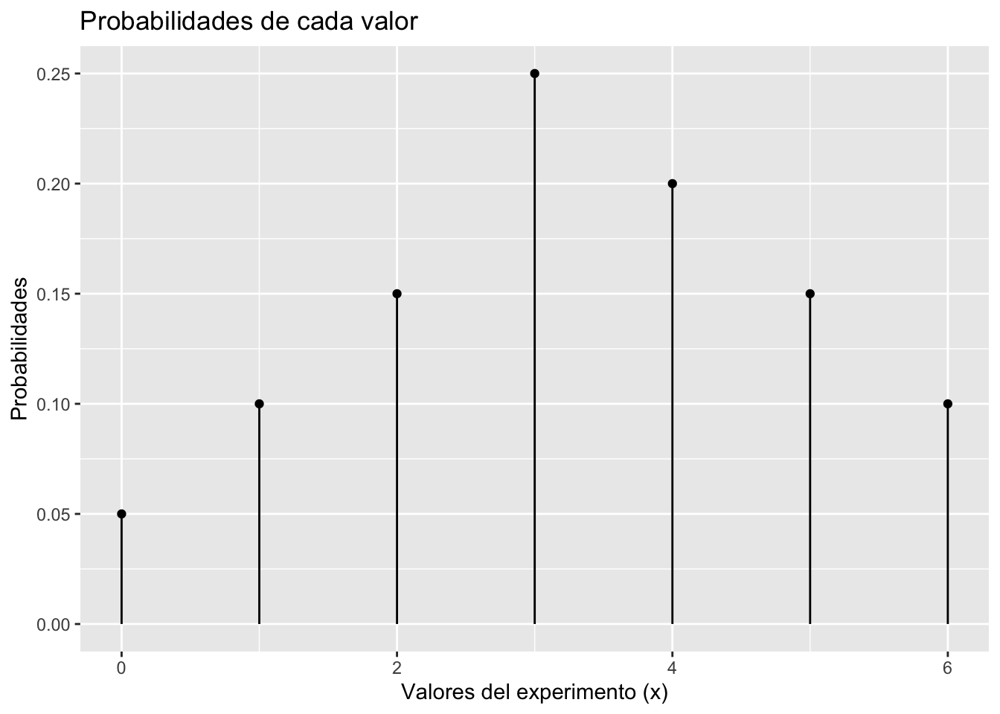

Conocimiento pedagógico del eje probabilidad y estadística
Actualización 2023-10-22
Unidad 1 Profundización en Estadística y Probabidades
1.1 Variable Aleatoria
Una variable aleatoria proporciona un medio para describir los resultados experimentales utilizando valores numéricos, es decir, una variable aleatoria asocia un valor numérico a cada uno de los resultados experimentales. Una variable aleatoria puede ser discreta o continua, depende del tipo de valores numéricos que asuma. (Anderson. 2008, página 187). * Una variable aleatoria se denomina discreta si asume un número finito de valores o una sucesión infinita de valores tales como \(0,1,2,\ldots\). Consideremos el siguiente experimento como ejemplo: un contador presenta el examen para certificarse como contador público. El examen tiene cuatro partes. Defina una variable aleatoria \(X\) como \(X =\) número de partes del examen aprobadas. Esta es una variable aleatoria discreta porque puede tomar el número finito de valores \(0,1,2,3\,\,o \,\, 4\). Otros ejemplos se pueden observar en la siguiente tabla.
| Experimento | Variable aleatoria (\(X\)) | Valores posibles para la variable aleatoria |
|---|---|---|
| Llamar a cinco clientes | Número de clientes que hacen un pedido | \(0,1,2,3,4,5\) |
| Inspeccionar un envío de 50 radios | Número de radios que tienen algún defecto | \(0,1,2,…,49,50\) |
| Hacerse cargo de un restaurante durante el día | Número de clientes | \(0,1,2,3,…\) |
| Vender un automóvil | Sexo del cliente | 0 si el hombre, 1 si es mujer |
- Una variable aleatoria se denomina continua si puede tomar cualquier valor numéricos dentro de un intervalo. Los resultados experimentales basados en escalas de medición tales como tiempo, peso, distancia y temperatura puede ser descritos por variables aleatorias continuas. Consideremos el siguiente experimento como ejemplo: observar las llamadas telefónicas que llegan a la oficina de atención de una importante empresa de seguros. La variable aleatoria que interesa es
\(X=\) tiempo en minutos entre dos llamadas consecutivas. Esta variable aleatoria puede tomar cualquier valor en el intervalo \([0,\infty)\). En efecto, \(x\) puede tomar un número infinito de valores, entre los cuales se encuentra valores como \(1.25\) minutos \(3.4562\) minutos, \(4.33333\) minutos, etc. En la siguiente tabla aparecen otros ejemplos de variables aleatorias continuas.
| Experimento | Variable aleatoria (\(X\)) | Valores posibles para la variable aleatoria |
|---|---|---|
| Operar un banco | Tiempo en minutos entre la llegada de los clientes | \(x\geq 0\) |
| Llenar una lata de cerveza (capacidad máxima 350cc) | Cantidad en cc | \(0\leq x \leq 350\) |
| Llegada de Autobuses | Tiempo entre llegadas sucesivas de autobuses en una parada | \(x\geq 0\) |
| Probar un proceso químico nuevo | Temperatura a la que tiene lugar la reacción deseada (mín. 150 grados F, máx. 212 grados F) | \(150\leq x \leq 212\) |
1.2 Variables aleatorias discretas (v.a.d)
La distribución de probabilidad de una variable aleatoria discreta describe como se distribuyen las probabilidades entre los valores de la variable aleatoria. En el caso de una variable aleatoria discreta \(x\), la distribución de probabilidad está definida por una función de probabilidad o también llamada función de masa de probabilidad (fmp) (Devore, 2008, página 90).
1.2.1 Función de masa de probabilidad
Consideremos el siguiente ejemplo, una empresa acaba de adquirir cuatro impresoras láser y sea
\(X\) el número entre estas que requieren servicio durante el periodo de garantía. Los posibles valores de
\(X\) son entonces \(0, 1, 2, 3 \,\, y\,\, 4\). La distribución de probabilidad diría cómo está subdividida la probabilidad de uno entre los cinco posibles valores: ¿cuánta probabilidad está asociada con el valor 0 de \(X\), cuánta está adjudicada con 1 de \(X\) y así sucesivamente?. Se utiliza la siguiente notación para las probabilidades:
\(p(0) =\) la probabilidad del valor 0 de \(X = P(X=0)\) \(p(1) =\) la probabilidad del valor 1 de \(X = P(X=1)\)
y así sucesivamente. En general, \(p(x)\) denotará la probabilidad asignada al valor de \(x\).
Ejemplo: Una cierta gasolinera tiene seis bombas. Sea
\(X\) el número de bombas que están bajo servicio a una hora particular del día. Suponga que la distribución de probabilidad de \(X\) es como se detalla en la siguiente tabla; la primera fila de la tabla contiene los posibles valores de \(X\) y la segunda la probabilidad de dicho valor.
| \(x\) | 0 | 1 | 2 | 3 | 4 | 5 | 6 |
|---|---|---|---|---|---|---|---|
| \(p(x)\) | 0.05 | 0.1 | 0.15 | 0.25 | 0.2 | 0.15 | 0.1 |
Ejemplo 01, la probabilidad de que a lo más dos bombas estén en servicio es
\[\begin{equation} \notag \begin{split} P(X\leq 2) &= P(X = 0 \text{ o } 1 \text{ o } 2) \\ & = p(0) + p(1) + p(2) \\ & = 0.05 + 0.1 + 0.15 = 0.3 \end{split} \end{equation}\]
Ejemplo 02, la probabilidad de que estén entre 2 y 4 bombas (inclusive) en servicio
\[\begin{equation} \notag \begin{split} P(2\leq X\leq 4) &= P(X = 2 \text{ o } 3 \text{ o } 4)\\ & = p(2) + p(3) + p(4) \\ & = 0.15 + 0.25 + 0.2 = 0.6 \end{split} \end{equation}\]
La situación anterior graficamente queda
Función de masa
Cabe mencionar que cualquier función de masa de probabilidad requiere cumplir las siguientes condiciones